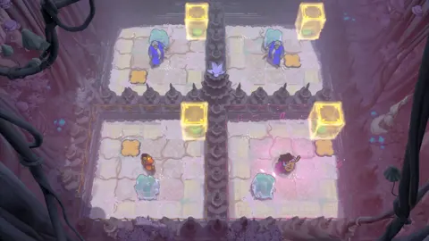
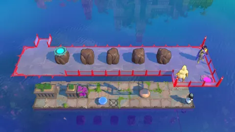
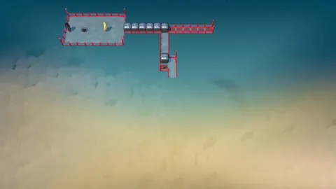
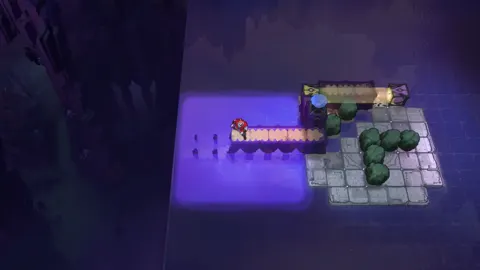
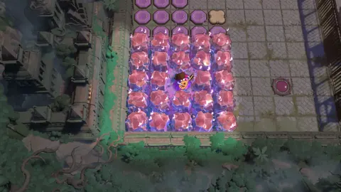
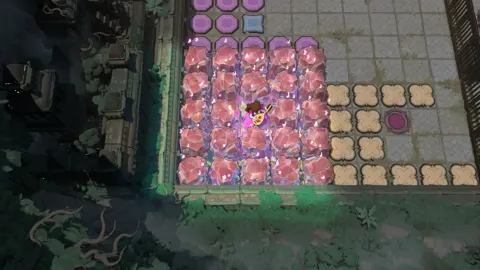

目录 920 个入口；当前已映射 914 个，差集 6 个；2 段尚未定位，21 组重复ID待核。P68已排除。
“未定位”不等于“原地图不存在”；“目录未出现”不等于“视频一定没拍到”。重复ID也不直接等于重复关卡。这里只纠正有位置、角色、物理世界或用户确认依据的错配，其他保留待核。
依据 用户校对原文，内部切换并回同一次访问；明确未进关的片段移出未知关卡清单。旧事件及证据保存在审核文件的superseded_events。
| 当前连续区间 | 入口ID | 处理 |
|---|---|---|
| P37 01:45–25:20 | promesst2.5_deeper | 身份或连续区间已按用户确认更新 |
| P38 00:14–38:10 | promesst3_streamlined | 身份或连续区间已按用户确认更新 |
| P38 38:10–42:44 | gem_beam_placement | 身份或连续区间已按用户确认更新 |
| P43 09:36–14:20 | end2_heroes_1_2 | 身份或连续区间已按用户确认更新 |
| P43 14:21–17:05 | end2_heroes_1_5 | 身份或连续区间已按用户确认更新 |
| P50 00:00–29:45 | magnitudes_v3 | 身份或连续区间已按用户确认更新 |
| P51 00:25–04:10 | zach_lilies_v3 | 身份或连续区间已按用户确认更新 |
| P53 21:45–25:55 | monster_promesst_v3 | 身份或连续区间已按用户确认更新 |
| P61 36:03–42:32 | best_beam_colors | 身份或连续区间已按用户确认更新 |
| P64 28:46–34:40 | end2_mirror1 | 身份或连续区间已按用户确认更新 |
| P65 01:58–08:49 | end3_off_topic_alt | 身份或连续区间已按用户确认更新 |
| P65 08:52–12:28 | end3_off_topic_mirror | 身份或连续区间已按用户确认更新 |
| P65 12:28–21:30 | end3_off_topic_heroes | 身份或连续区间已按用户确认更新 |
| P65 21:38–28:28 | end3_reorder_skipping_fix | 身份或连续区间已按用户确认更新 |
| P65 28:29–34:43 | end3_reorder_mirror | 身份或连续区间已按用户确认更新 |
| 视频区间 | 分类 | 依据 |
|---|---|---|
| P51 00:14–00:24 | 大世界；不计关卡 | 00:25进入第一关，此前片段属于大世界。 |
| P51 04:10–04:25 | 大世界；不计关卡 | 04:10已离开第一关，到下一入口之前为大世界。 |
| P51 16:00–16:55 | 大世界；不计关卡 | 用户确认16:00–16:55、24:50–25:20在大世界，没有进关。 |
| P51 24:50–25:20 | 大世界；不计关卡 | 用户确认16:00–16:55、24:50–25:20在大世界，没有进关。 |
| P52 02:45–03:30 | 大世界；不计关卡 | 用户确认02:45–03:30、15:20–15:45均未进关。 |
| P52 15:20–15:45 | 大世界；不计关卡 | 用户确认02:45–03:30、15:20–15:45均未进关。 |
| P53 03:05–03:22 | 大世界；不计关卡 | 用户确认03:05–03:22、13:00–13:20、28:15–28:50均为大世界。 |
| P53 13:00–13:20 | 大世界；不计关卡 | 用户确认03:05–03:22、13:00–13:20、28:15–28:50均为大世界。 |
| P53 28:15–28:50 | 大世界；不计关卡 | 用户确认03:05–03:22、13:00–13:20、28:15–28:50均为大世界。 |
| P67 19:00–21:10 | 大世界；不计关卡 | 用户确认19:00–21:10、21:25–26:30、26:40–30:30均未进关。 |
| P67 21:25–26:30 | 大世界；不计关卡 | 用户确认19:00–21:10、21:25–26:30、26:40–30:30均未进关。 |
| P67 26:40–30:30 | 大世界；不计关卡 | 用户确认19:00–21:10、21:25–26:30、26:40–30:30均未进关。 |
| P67 31:00–32:04 | 大世界；不计关卡 | 用户确认31:00–32:04为大世界，未进关。 |
| 视频 / 原编号 | 旧匹配 | 处理 | 证据与待核点 |
|---|---|---|---|
| P02 02:16–02:32p2-006 · 原序号 1 | heroes1_1 | 已改为 heroes1_4.5 | 130–135秒地表显示从中央通道走到右上排最右入口；与正中通道及同排4枚入口对照，对应原地图(86,86)，在heroes1_5_v2(85,86)右侧。137–140秒初始角色为绿色吟游诗人、目标为绿色，与heroes1_4.5参考一致，而heroes1_1是红色角色/橙色目标。基于入口相对位置+角色配置共同改正，不能单靠相同桥面布局。候选：heroes1_4.5对照图 · 对照图 |
| P43 13:54–14:05p43-003 · 原序号 3 | heroes1_2_v2 | 用户确认未切关；已并入 end2_heroes_1_2 | 13:54/14:10均为上一关内部视角；14:05短暂匹配end2_heroes_1_5也处于同一连续过程，合回首个入口。 用户已确认无切关，旧片段已并回连续访问。候选：end2_heroes_1_2对照图 |
| P43 14:10–14:15p43-005 · 原序号 3 | heroes1_2_v2 | 用户确认未切关；已并入 end2_heroes_1_2 | 13:54/14:10均为上一关内部视角；14:05短暂匹配end2_heroes_1_5也处于同一连续过程，合回首个入口。 用户已确认无切关，旧片段已并回连续访问。候选：end2_heroes_1_2对照图 |
| P43 16:41–16:50p43-009 · 原序号 5 | heroes1_5_v2 | 用户确认未切关；已并入 end2_heroes_1_5 | 16:41仍是前一段相同关卡的内部视角，重复匹配合并。14:20–14:24有界图册保留相邻两关交界。 用户已确认无切关，旧片段已并回连续访问。候选：end2_heroes_1_5对照图 |
| P64 29:25–29:53p64-010 · 原序号 6 | mirror_1 | 用户确认未切关；已并入 end2_mirror1 | 29:25–29:53、34:21–34:40均属end2_mirror1，与前段无切关。 用户已确认无切关，旧片段已并回连续访问。候选：end2_mirror1对照图 · 对照图 |
| P64 34:21–34:40p64-012 · 原序号 6 | mirror_1 | 用户确认未切关；已并入 end2_mirror1 | 29:25–29:53、34:21–34:40均属end2_mirror1，与前段无切关。 用户已确认无切关，旧片段已并回连续访问。候选：end2_mirror1对照图 · 对照图 |
用户已确认未切关的片段不再列为重复记录。其余组仍保留，优先检查带具体疑点的组；重复可能为正常重试或回访，不应仅由布局变化判定进出关卡。
| 入口ID | 全部时间窗 | 疑点与核对方法 |
|---|---|---|
| mirror_4主世界 · 3 个匹配窗 | P05 01:43–02:10p5-004 P05 02:25–02:35p5-005 P05 03:05–03:40p5-006 | 三个匹配窗之间有同一棋盘连续操作/画线讲解；可能应合并一次连续访问，边界待人工核对。 边界对照图 |
| mirror_14主世界 · 2 个匹配窗 | P05 31:24–31:45p5-029 P05 32:00–32:10p5-030 | 31:44–32:02有界帧未见退场，疑似同一棋盘连续操作；入口次数待核。 边界对照图 |
| end1主世界 · 5 个匹配窗 | P24 01:03–03:33p24-001 P24 05:04–06:10p24-002 P24 10:15–10:25p24-003 P24 10:55–11:08p24-004 P24 15:55–16:07p24-005 | 大型相连内部房间；#003/#004可能同一棋盘/重试，其他回访也缺逐次入口证据，不能由匹配次数认定入口次数。 边界对照图 |
| mirror_carry_duo天空世界 · 2 个匹配窗 | P31 54:28–54:45p31-035 P31 57:55–59:15p31-036 | 仅检测出重复ID，尚未逐段裁决；可能为回访、重试、连续内部视角，或同构变体错认。请比较进关前位置和初始角色，不能仅凭地形。 |
| vertical_promesst_v2天空世界 · 2 个匹配窗 | P36 00:55–01:05p36-001 P36 08:00–08:10p36-002 | 仅检测出重复ID，尚未逐段裁决；可能为回访、重试、连续内部视角，或同构变体错认。请比较进关前位置和初始角色，不能仅凭地形。 |
| end2_prism_hp天空世界 · 2 个匹配窗 | P44 09:18–09:55p44-004 P44 12:10–12:20p44-005 | 仅检测出重复ID，尚未逐段裁决；可能为回访、重试、连续内部视角，或同构变体错认。请比较进关前位置和初始角色，不能仅凭地形。 |
| torus_blocks_alt_v4地下世界 · 2 个匹配窗 | P46 03:30–04:30p46-004 P46 04:40–05:05p46-005 | 仅检测出重复ID，尚未逐段裁决；可能为回访、重试、连续内部视角，或同构变体错认。请比较进关前位置和初始角色，不能仅凭地形。 |
| jenga_assorted地下世界 · 2 个匹配窗 | P46 07:43–08:10p46-007 P46 14:10–15:02p46-008 | 仅检测出重复ID，尚未逐段裁决；可能为回访、重试、连续内部视角，或同构变体错认。请比较进关前位置和初始角色，不能仅凭地形。 |
| moving_through_mirrors_v3地下世界 · 2 个匹配窗 | P48 10:02–10:20p48-005 P48 15:30–15:40p48-006 | 仅检测出重复ID，尚未逐段裁决；可能为回访、重试、连续内部视角，或同构变体错认。请比较进关前位置和初始角色，不能仅凭地形。 |
| self_teleporting地下世界 · 2 个匹配窗 | P48 25:48–27:30p48-012 P48 27:40–28:02p48-013 | 仅检测出重复ID，尚未逐段裁决；可能为回访、重试、连续内部视角，或同构变体错认。请比较进关前位置和初始角色，不能仅凭地形。 |
| mega_clone_v2地下世界 · 4 个匹配窗 | P49 16:04–17:30p49-009 P49 19:30–19:50p49-010 P49 20:35–20:45p49-011 P49 21:10–21:29p49-012 | 仅检测出重复ID，尚未逐段裁决；可能为回访、重试、连续内部视角，或同构变体错认。请比较进关前位置和初始角色，不能仅凭地形。 |
| water_bender_v3地下世界 · 2 个匹配窗 | P51 13:15–15:53p51-009 P51 20:15–21:05p51-013 | 仅检测出重复ID，尚未逐段裁决；可能为回访、重试、连续内部视角，或同构变体错认。请比较进关前位置和初始角色，不能仅凭地形。 |
| 地下世界 · 2 个匹配窗 | P53 13:21–15:50p53-006 P53 21:30–21:40p53-017 | 仅检测出重复ID，尚未逐段裁决；可能为回访、重试、连续内部视角，或同构变体错认。请比较进关前位置和初始角色，不能仅凭地形。 |
| wand_reintro地下世界 · 2 个匹配窗 | P54 00:50–01:00p54-001 P54 04:30–04:40p54-002 | 仅检测出重复ID，尚未逐段裁决；可能为回访、重试、连续内部视角，或同构变体错认。请比较进关前位置和初始角色，不能仅凭地形。 |
| boot_cycle_warrior地下世界 · 2 个匹配窗 | P57 03:32–04:10p57-002 P57 05:55–06:53p57-003 | 仅检测出重复ID，尚未逐段裁决；可能为回访、重试、连续内部视角，或同构变体错认。请比较进关前位置和初始角色，不能仅凭地形。 |
| ortho2地下世界 · 2 个匹配窗 | P57 44:11–44:17p57-019 P57 46:00–47:20p57-021 | 仅检测出重复ID，尚未逐段裁决；可能为回访、重试、连续内部视角，或同构变体错认。请比较进关前位置和初始角色，不能仅凭地形。 |
| frontier地下世界 · 2 个匹配窗 | P57 48:09–48:12p57-022 P57 49:16–50:21p57-025 | 仅检测出重复ID，尚未逐段裁决；可能为回访、重试、连续内部视角，或同构变体错认。请比较进关前位置和初始角色，不能仅凭地形。 |
| end3_heroes_1地下世界 · 2 个匹配窗 | P61 06:37–06:50p61-002 P61 07:09–14:01p61-003 | 仅检测出重复ID，尚未逐段裁决；可能为回访、重试、连续内部视角，或同构变体错认。请比较进关前位置和初始角色，不能仅凭地形。 |
| end3_mirror_2_alt2地下世界 · 2 个匹配窗 | P61 19:17–19:27p61-016 P61 20:09–26:15p61-017 | 仅检测出重复ID，尚未逐段裁决；可能为回访、重试、连续内部视角，或同构变体错认。请比较进关前位置和初始角色，不能仅凭地形。 |
| end3_skipping_red地下世界 · 2 个匹配窗 | P61 31:17–31:37p61-028 P61 32:02–35:16p61-029 | 仅检测出重复ID，尚未逐段裁决；可能为回访、重试、连续内部视角，或同构变体错认。请比较进关前位置和初始角色，不能仅凭地形。 |
| environment_art_grid地下世界 · 2 个匹配窗 | P66 02:46–04:40p66-001 P66 07:55–09:20p66-003 | 仅检测出重复ID，尚未逐段裁决；可能为回访、重试、连续内部视角，或同构变体错认。请比较进关前位置和初始角色，不能仅凭地形。 |
已归入原关卡和明确在大世界的片段已移出此表。剩余片段仍需定位，不能据此宣布原图没有这些关。
| 视频 | 旧ID（如有） | 原因 |
|---|---|---|
| P44 51:40–53:29p44-012 | 未匹配 | Full timeline sheets 19–20 show the icy courtyard first at 51:40 (3100s); the same overhead grid, pale ice floor and dark enclosing walls continue through 53:25. At 53:30 the board exits to a black completion transition, so this visit ends there; later footage is a different chamber. |
| P44 53:55–61:50p44-013 | 未匹配 | Full timeline sheets 20–23 show the square icy-stone chamber with a pink-block rectangular loop beginning at 53:55 (3235s). The same board remains continuously on screen through 61:50 (3710s), with pieces moved around the loop. At 61:55 it cuts back to the separate warm-colored room; that transition bounds this unknown visit. |
下面的就近视频仅按同一地图的空间距离排列，方便找进关前的位置；不是该关出现的证据，也没有据此自动填入地图。
| 原地图入口 / 坐标 | 参考布局 | 就近已知入口的视频（仅导航线索） |
|---|---|---|
| arcadia_surprise_big主世界 · [[-24.0, 116.0, 0.0]] |  | P15 40:46–44:21 · help_drop P16 27:19–28:21 · pushing_orange |
| design_fts地下世界 · [[21.0, 131.0, -24.0]] |  | P62 07:43–16:55 · make_shoreline P62 21:08–25:20 · make_thief_goblin_maze_v2 |
| end3_pipeline_setup地下世界 · [[-15.0, 117.0, -24.0]] |  | P67 01:35–03:09 · end3_pipeline_design P67 03:10–11:20 · end3_pipeline_cleanup |
| save_for_later地下世界 · [[42.0, 83.0, -19.0]] |  | P54 16:06–17:38 · get_through_alt P54 17:55–20:04 · get_through_depths |
| snipperclips_diagonal主世界 · [[11.0, 77.0, 0.0]] |  | P37 29:18–30:00 · monkey_in_the_midpoint P38 38:10–42:44 · gem_beam_placement |
| snipperclips_square主世界 · [[11.0, 79.0, 0.0]] |  | P39 00:57–01:05 · snipperclips_0_square P37 29:18–30:00 · monkey_in_the_midpoint |